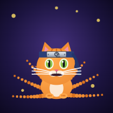
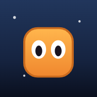
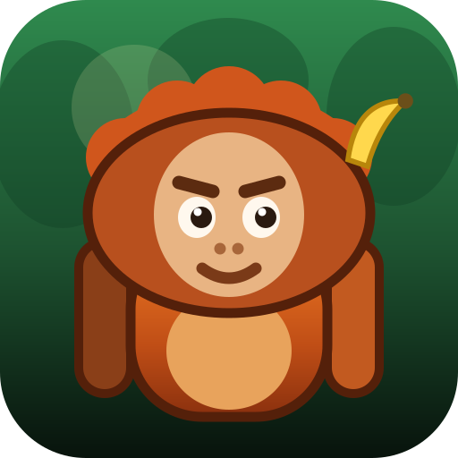
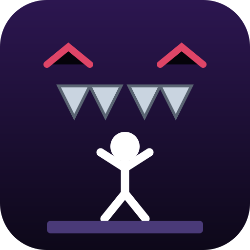

Yıldız Yakalayan KediYıldız topla, kuyruk kap, boss'ları yen
1

Meteordan Kaçan KediHer yönden gelen meteorlardan kaç
2

Zıplayan KediZıpla, tuzaklardan kaç, bayrağa ulaş
3

Orangutan MacerasıMuz fırlat, kolunu savur, Kral Goril’i yen
4

Şeytani BölümBölüm sana tuzak kuruyor — ona güvenme!
5